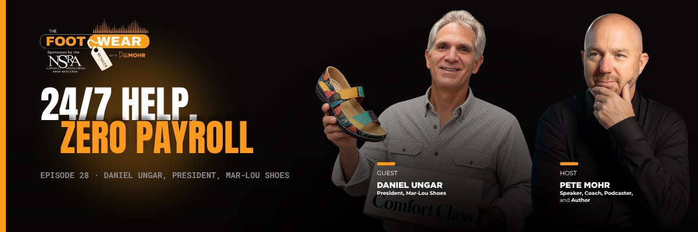
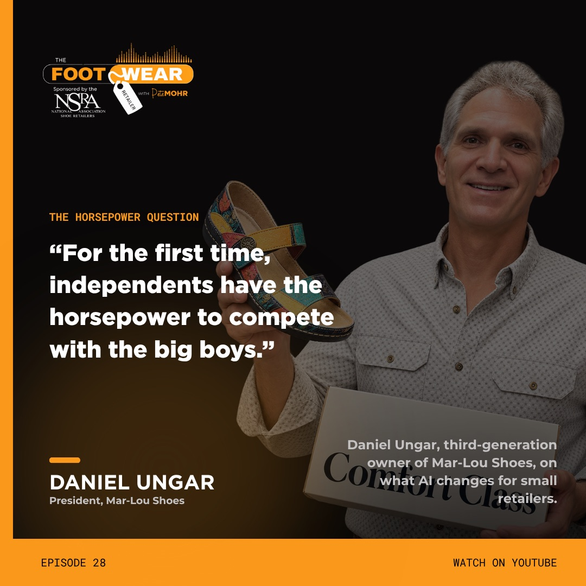
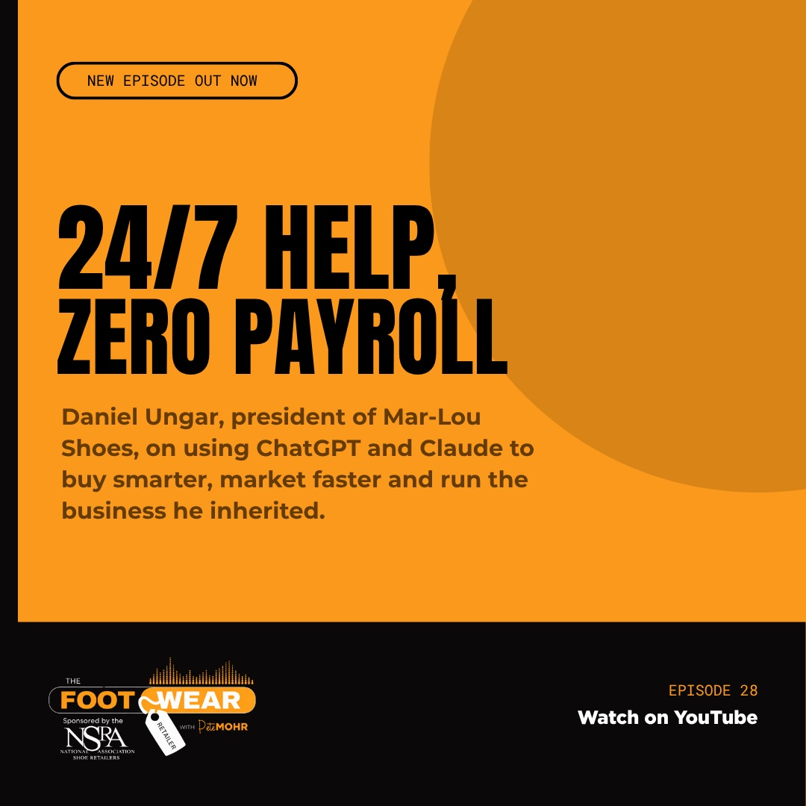

Creative Operations · Podcast
Podcast Episode Production System
The Footwear Retailer · Sponsored by NSRA
- Challenge
- Every episode needs the same full set of deliverables across YouTube, social, email, and the sponsor, without rebuilding it from scratch each time.
- What I built
- A repeatable episode package: brand-kit templates and AI-assisted tools for the edit, reels, launch graphics, and copy, plus an 8-step, week-long posting plan for the sponsor.
- Result
- Episode 28 held viewers for 12:18 on average and logged 55 hours of watch time in its first five weeks, from a niche audience of independent footwear retailers.